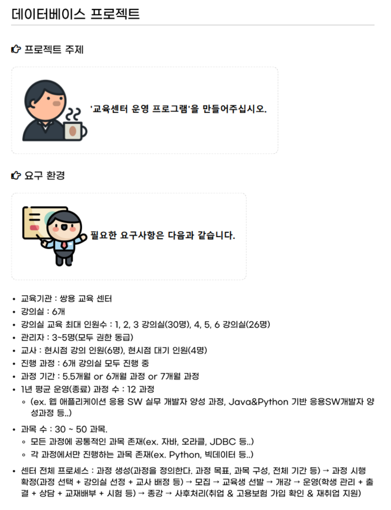
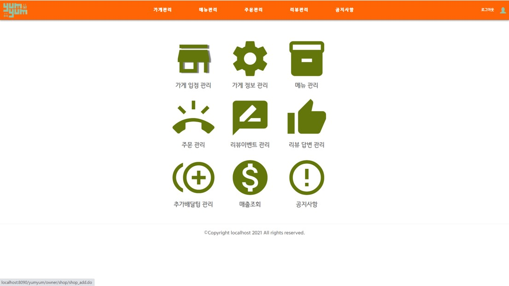

2021. 07. 13 ~ 2021. 08. 05 (25일간) / 4명
Eclipse, SQL developer, GitHub, Visual Studio Code, eXERD
JAVA, JSP, jQuery, ORACLE, HTML, CSS, Javascript, Bootstrap
사용자/가게/메뉴그룹/메뉴/메뉴추가옵션/사용자_즐겨찾는가게를 위한 테이블을 생성하는 CREATE를 작성하고 시스템을 사용할 때 위치기반으로 가게목록을 불러오기 위해서 리뷰,리뷰답변,주문내역_메뉴, 가게/메뉴/메뉴그룹/메뉴추가옵션/주문내역_메뉴/리뷰/리뷰점주답변을 팀원 개인의 주소를 반영하여 더미를 나눠서 작성하였다.
로그인, 가게, [고객센터]_자주 묻는 질문,공지사항,관리자시작화면(메인화면),점주시작화면(메인화면)의 화면을 처음 UI화면 설계서대로 HTML과 CSS로 화면을 디자인하였다.
로그인, 가게, [고객센터]_자주 묻는 질문,공지사항,관리자시작화면(메인화면),점주시작화면(메인화면)에 불러올 데이터를 Servlet과 JSP을 사용하여 DB와 서버연결하여 데이터를 출력하였고 JavaScript로 라디오버튼을 누를때마다 가게정보 탭을 변경할 수 있도록 하였고, 질문과 답변을 아코디언메뉴로 구현하였다.
기존의 배달웹을 분석하여 벤치마킹하고 우리만의 '차별점'을 구상하였다.
각 사용자(관리자,점주,소비자)별로 작업의 진행 흐름과 과정을 순서도로 표현하고 가게정보(메뉴,이벤트,리뷰),공지사항,[고객센터](자주묻는질문),주문화면 구성을 카카오오븐을 사용하여 대략적인 UI를 설계하였다.
NEXT